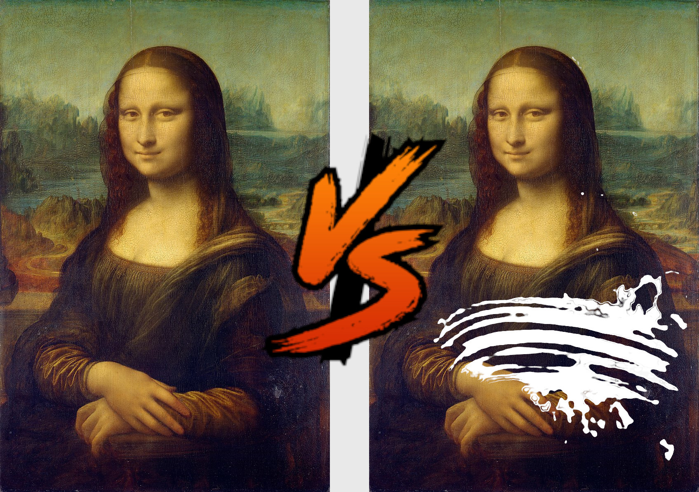
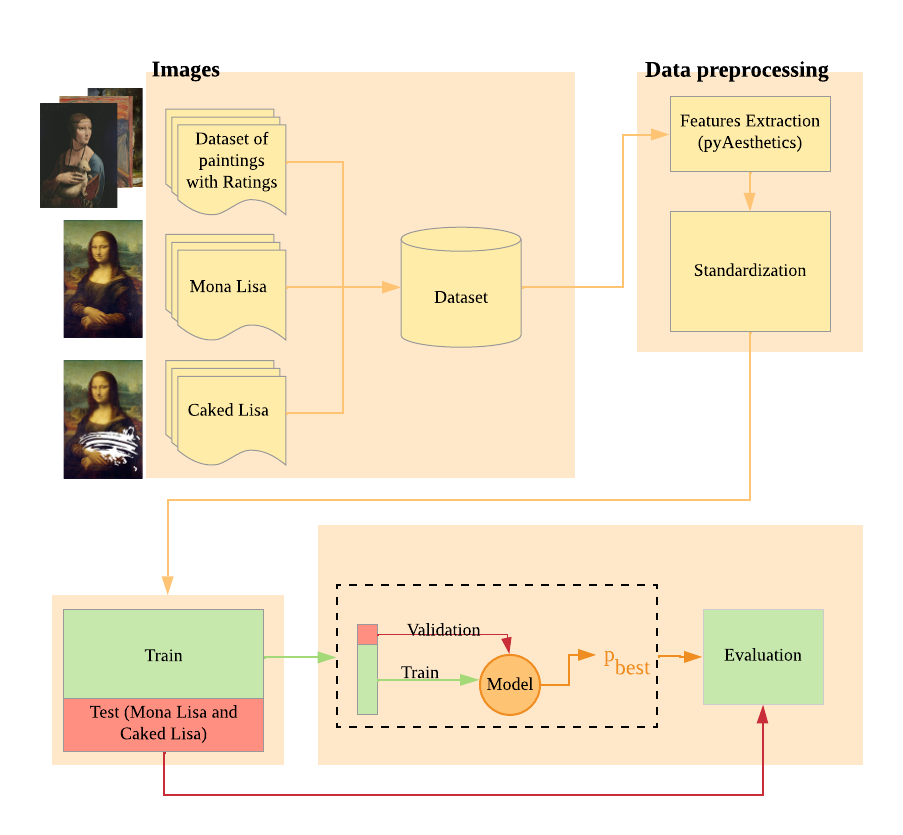

Mona Lisa vs Caked Lisa¶
In May 2022 a man was arrested after he smeared the protective glass of Leonardo’s famous panting with a cake. Pictures of the Mona Lisa covered in Cake were taken by visitors of the Louvre Museum, and rapidly published online.
{kind=link}
In this example, we will use a dataset of paintings’ from Kaggle to train a Machine Learning models to predict ratings from the paintings from four aesthetic features, namely Brightness, Visual Complexity, Symmetry, and Colorfulness.
Trained model will be used to make predictions about the aesthetic appearance of two versions of the Mona Lisa: the original painting and the “caked” version.
{kind=link}
To obtain an estimate of aesthetic judgments of Caked Lisa, we trained a Machine Learning Regressor to predict judgments of paintings from their aesthetic features. We trained the model on a freely available dataset of 39 paintings, each rated by 48 individuals. The model was then employed to generate an estimated rating for the Mona Lisa and the Caked Lisa.
{kind=link}
First we import the required libraries.
>>> import os
>>> import pandas as pd
>>> from sklearn.linear_model import LinearRegression
>>> import matplotlib.pyplot as plt
>>> import time
Then we defined required files and paths.
>>> # Define the path to the different files and folders
>>> BASEPATH = 'path/to/project/'
>>> DB = BASEPATH + 'Raw/db.csv' #ratings' databse
>>> PAINTINGS = BASEPATH + 'Raw/paintings/' #folder with paintings' images
>>> PROCESSED = BASEPATH + 'Processed/' #empty folder for processed data
Load the datings database in a dataframe.
>>> #Import the paintings' database
>>> df = pd.read_csv(DB)
Then we extract aesthetic features from the images.
>>> # Estimate features for the test set
>>> res = []
>>> for painting in tqdm(df.painting):
>>> rating = int(df[df['painting'] == painting].to_numpy()[0][0:48].mean())
>>> filename = painting.replace(' ','').replace(',','').replace('.','').replace('\'','') + '.jpg'
>>> results = pyaesthetics.analysis.analyzeImage(PAINTINGS + filename)
>>> res.append([painting, results['brightness_BT709'],results['VC_quadTree'],results['Symmetry_QTD'], results['Colorfulness_RGB'], rating])
We then save the estimated features’ values into a new dataframe.
>>>trainSet = pd.DataFrame(res, columns=[‘Painting’,’Brightness’,’VisualComplexity’,’Symmetry’,’Colorfulness’,’Rating’]) >>>trainSet.to_csv(PROCESSED + ‘results.csv’)
Subsequently, we can train and test a Linear Regressor to estimate the judgements of the normal Mona Lisa and its caked version.
>>> # Train the Regressor
>>> y = trainSet['Rating']
>>> X = trainSet[['Brightness','VisualComplexity','Symmetry','Colorfulness']]
>>> reg = LinearRegression().fit(X, y)
>>> # Extract features for the test images
>>> testSet = []
>>> for painting in tqdm(['Mona Lisa','Caked Lisa']):
>>> filename = painting.replace(' ','').replace(',','').replace('.','').replace('\'','') + '.jpg'
>>> results = pyaesthetics.analysis.analyzeImage(PAINTINGS + filename)
>>> testSet.append([painting, results['brightness_BT709'],results['VC_quadTree'],results['Symmetry_QTD'], results['Colorfulness_RGB']])
>>>
>> testSet = pd.DataFrame(testSet, columns=['Image','Brightness','VisualComplexity','Symmetry','Colorfulness'])
>>>
>>> # Estimate the Aeshtetic ratigs of test images
>>> X = testSet[['Brightness','VisualComplexity','Symmetry','Colorfulness']]
>>> labels, predictions = testSet.Image, reg.predict(X)
The estimated aesthetics ratings are as follow:
Painting |
EAR |
|---|---|
Mona Lisa |
2.26 |
Caked Lisa |
2.32 |
Caked Lisa has an estimated Aeshtetic rating higher than normal Mona Lisa.
This example is part of:
Gabrieli, G., Scapin, G., & Esposito, G. (2022). Pyaesthetic, a python package for empirical aesthetic analysis. XXVII Conference of the International Association of Empirical Aesthetics, Philadelphia, United States.
More details are available here.